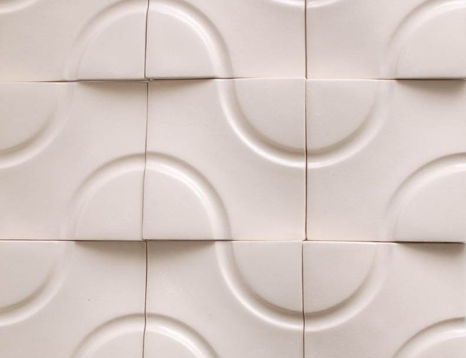
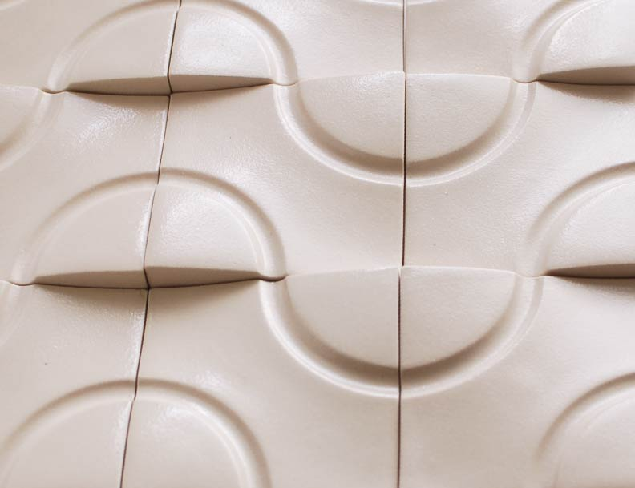
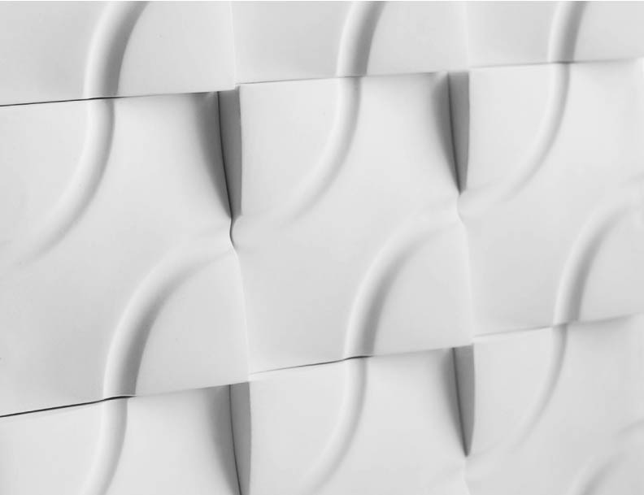

Hydratile
This modular ceramic tile design can create a multitude of graphic patterns and spatial forms that evoke literal and symbolic imagery of water.The Process

Task
We were challenged to design a slip-cast ceramic object in the style of Jeffrey Beers International, an NYC-based interior design firm. This meant bold gestures and colors, contemporary forms, and subtle historical references which would potentially be used in the design of Estiatorio Milos, an old-world, rustic Greek dining experience in Miami.Inspiration
I explored commonalities between Greece and Miami to develop a theme that could be appeciated by both cultures.Water
The theme of water was chosen and explored to discover attributes that could be translated into ceramic form.
Graphic Tile
This tile uses centered quarter-circles to create opportunities for contiguous curved grooves, regardless of orientation.Spatial Tile
This tile mimics water's spatial characteristics with rolling waves, creating gradient lighting effects.Hydratile
Hydratile evokes water, both graphically and spatially. Each graphic pattern also has a unique spatial quality.
Application
The tiled surface can be applied to a multitude of surfaces within the Estiatorio Milos restaurant.
Digital Prototyping
Formal explorations using digital tools allowed for quick discovery of patterns to achieve the optimal balance of visual effect and manufacturability.Physical Prototyping
Paper models provided quick tangible explorations to determine the overall scale and depth of the grooves. The chosen design was 3D-printed in ABS plastic to serve as an original positive for the plaster mould.
Production
Using a single mould, initial tests determined optimal casting, drying, firing, methods. Once the process had been optimized, several moulds were created to produce a large number of tiles in a limited time period.Glazing
Several glaze options and application techniques were explored.Versatility
Hydratile's modular design allows it to create a multitude of patterns.
Glazed Stoneware: Bubbles
Glazed Stoneware: Rolling Undulations

Semi-Glazed Stoneware: Horizontal Waves

Semi-Glazed Stoneware: Cresting Waves

Glazed Porcelain: Bunched Waves

Glazed Stoneware: Choppy Water
Unglazed Porcelain: Diagonal Waves

Unglazed Porcelain: Fish Scales